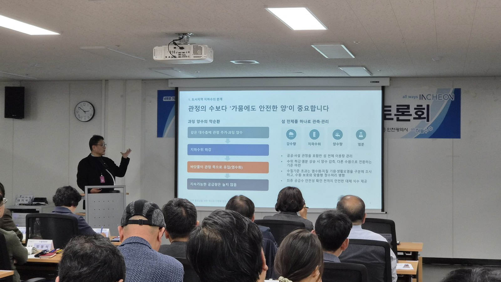

인천시, 강화·옹진 섬 식수 공급 개선 토론회 열어
해수담수화·지하수저류댐 대안 논의
주민·전문가 등 50여 명 참석
유지관리 재원 확보 과제로 꼽혀
AI경제저널=김갑봉 기자 | 인천시 상수도사업본부(본부장 온윤희)가 2일 시청 본관 지하 1층 소통회의실에서 「섬 지역 식수 공급 개선 토론회」를 열었다. 강화·옹진 섬 마을수도 운영 실태를 살피고 주민과 전문가 의견을 모으는 자리다.
토론회에서는 해수담수화 시설과 지하수저류댐 같은 취수원 다변화 방안이 대안으로 올랐다. 유지관리 재원 확보는 핵심 과제로 꼽혔다.
시청 소통회의실, 50여 명 참석
토론회에는 인천시의회 방지현·신영희 의원과 강화·옹진군 물 관리 담당자가 참석했다. 섬 마을 이장 등 주민과 인천시·군 공무원을 합쳐 50여 명이 자리했다.
순서는 섬 지역 마을수도 사업 추진 현황 설명, 전문가 주제발표, 종합토론과 질의응답이다.
급수시설 운영, 취수원 다변화 두 발제

전문가 발제는 두 가지다. 「인천 섬 지역 급수시설 현황과 효율적 운영관리를 위한 제언」과 「섬 지역 물 공급을 위한 취수원 다변화 방안」이다.
종합토론 좌장은 김주환 인하대 교수가 맡았다. 김성우 인천연구원 환경안전연구부장과 이경혁 명지대 교수, 김충환 세종워터컨설팅 대표가 토론했다.
박경순 장원 전무와 김동환 환경국제전략연구소 대표, 오현제 한국건설기술연구원 연구원도 토론자로 나섰다.
해수담수화·지하수저류댐, 섬마다 여건 달라
해수담수화 시설은 바닷물에서 염분을 걸러 먹는 물을 만든다. 지하수저류댐은 땅속에 물을 가둬 두었다가 끌어 쓰는 시설이다.
두 방식은 설비와 운영 조건이 다르다. 참석자들은 섬마다 지형과 수자원 여건이 달라 섬에 맞는 취수원을 골라야 한다고 짚었다.
원격 감시, 권역별 통합 운영 논의
토론에서는 수도시설 원격 감시와 섬 권역별 통합 운영·관리 체계가 논의됐다. 시설 고장과 수질 문제에 대응하는 방안도 다뤘다. 참석자들은 유지관리 재원 확보를 핵심 과제로 꼽았다.
시, 의견 모아 개선계획에 반영
인천시는 토론회에서 나온 전문가 제언과 주민 의견을 검토해 개선계획 수립 등 행정에 반영한다.
온윤희 인천시 상수도사업본부장은 "섬 지역 주민이 안정적으로 깨끗한 물을 공급받을 수 있도록 현장의 목소리와 전문가 제언을 충분히 반영하겠다"고 말했다. 섬 지역 특성과 급수 여건을 고려해 실효성 있는 개선방안을 마련하겠다고도 밝혔다.
이번 발표에는 섬별 급수 방식과 시설 수, 운영비 규모가 나오지 않았다.
참고문헌
- 인천시, 「인천시, 섬 지역 안정적 물 공급 방안 모색… 전문가 토론회 개최」, 2026.11.2. https://www.incheon.go.kr/IC010205/view?repSeq=DOM_0000000015876809
- 경인매일, 「인천시, 강화·옹진 섬 지역 안정적 식수 공급 위해 주민·전문가 50여 명과 개선방안 논의」, 2026.11.2. https://www.kmaeil.com/news/articleView.html?idxno=656709
- 쓰담미디어, 「인천 섬 지역 식수 공급, 해수담수화·지하수저류댐이 대안 될까」, 2026.11.2. https://www.newsenc.com/news/articleView.html?idxno=5417
- 전국매일신문, 「인천시, 섬 지역 안정적 물 공급 방안 모색… 전문가 토론회」, 2026.11.2. https://www.jeonmae.co.kr/news/articleView.html?idxno=1307725
- 경기헤드라인, 「인천시, 섬 지역 안정적 물 공급 방안 모색… 전문가 토론회 개최」, 2026.11.2. https://www.gheadline.co.kr/news/article.html?no=630930
[사진 출처]
- [사진1] 인천광역시, 「인천시, 섬 지역 안정적 물 공급 방안 모색… 전문가 토론회 개최」 보도자료 첨부 사진, 2026.11.2., 공공누리 출처표시, https://www.incheon.go.kr/IC010205/view?repSeq=DOM_0000000015876809
관련기사
- 10월 수출 1152억 달러…인천 9월 수출은 반도체 빼면 8.3% 감소
- 인천신용보증재단, 소상공인 495억원 협약보증 2일부터 접수
- 인천시·필라델피아, 바이오·교육·문화 교류 확대 논의
- 인천 택시 4606대, 2028 G20 정상회의 유치 홍보 나선다
저작권자 © AI경제저널 무단전재 및 재배포, AI학습 및 활용 금지